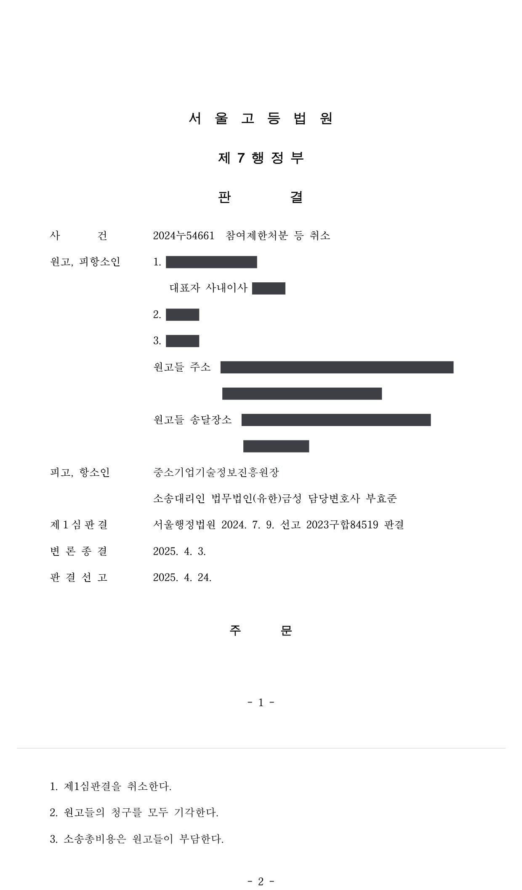
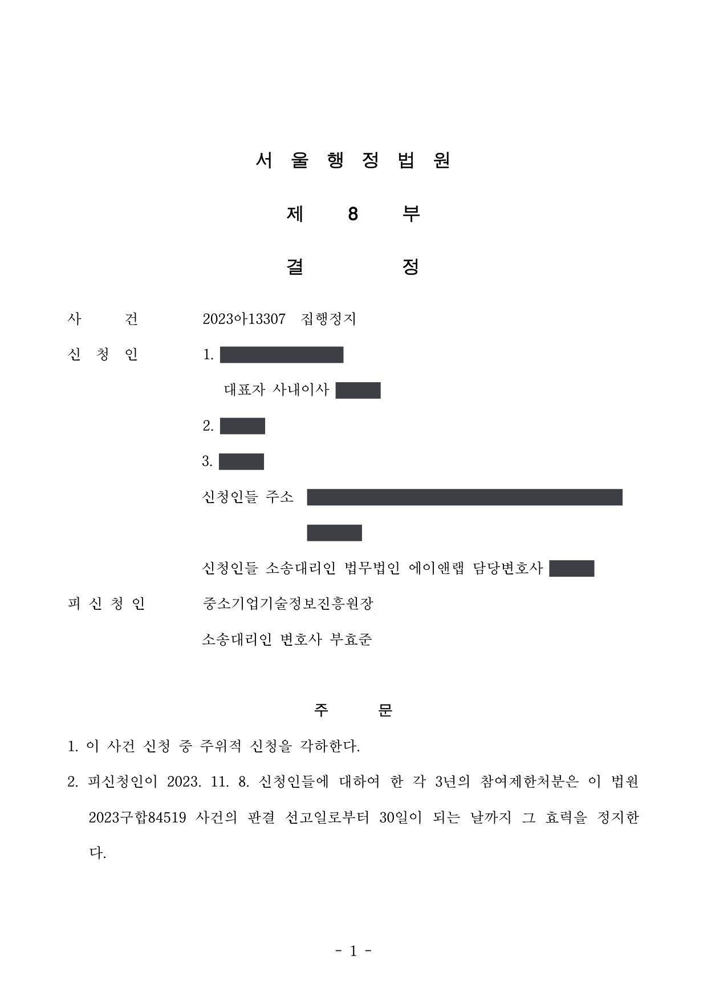

국가연구개발사업 참여제한·환수처분 취소소송 (항소심에서 1심 취소)
서울행정법원 2023구합84519 · 서울고등법원 2024누54661 · 서울행정법원 2023아13307 · 담당변호사 부효준
판결문



사건의 요지
과제 수행 중 연구개발비 사용과 결과 보고의 적정성을 이유로 한 3년 참여제한처분과 환수처분이 다투어진 사건입니다. 1심은 처분을 취소했으나 항소심은 1심 판결을 취소하고 청구를 모두 받아들이지 않았습니다. 집행정지 사건도 함께 수행했습니다.
사건의 주요 내용
원고 회사는 2017년도 창업성장기술개발사업 창업과제에 '중장비 안전운전용 360도 카메라 시스템 개발 과제'로 선정되어, 2017년 7월 전문기관과 개발기간 12개월(2017년 6월~2018년 6월), 정부지원금 1억 9,800만 원(총 사업비 2억 4,750만 원)의 협약을 체결하였습니다. 원고 회사의 대표자와 과제책임자도 함께 소송의 원고가 되었습니다.
전문기관은 2019년 5월 특별점검에서 원고들이 행정업무 직원 두 명을 참여연구원으로 허위 등록하여 인건비를 지급한 사실을 확인하였고, 제재조치위원회 심의를 거쳐 2023년 7월 구 중소기업 기술혁신 촉진법 제31조 제1항 제4호(출연금을 사용용도 외의 용도에 사용하였거나 사용명세를 거짓으로 보고한 경우)를 근거로 원고들에게 각 3년의 참여제한과 원고 회사에 2,382,000원의 환수를 통지하였습니다(1차 통지). 원고들의 이의신청 뒤 2023년 11월 참여제한 기간의 시기·종기를 바꾸고 부정사용금액 2,162,073원을 정산 과정에서 불인정하여 정산금으로 환수한다는 2차 통지가 있었습니다.
원고들은 2차 통지에 따른 참여제한처분과 환수처분의 취소를 구하는 소송과 함께 집행정지를 신청하였습니다. 법원은 1차 통지에 대한 집행정지 신청(주위적 신청)은 2차 통지가 1차 통지의 주요 부분을 실질적으로 변경한 새 처분이라는 전문기관 측 주장을 받아들여 각하하고, 2차 통지에 따른 참여제한처분의 효력만 판결 선고 후 30일까지 정지하였습니다. 본안 1심은 원고들의 청구를 대부분 받아들였고, 전문기관이 항소하여 항소심에서 결론이 뒤집혔습니다.
쟁점
- 민간부담 현물로 지출되는 참여연구원 인건비를 허위 등록 인력에게 지급하고 보고한 것이 '출연금을 사용용도 외의 용도에 사용하였거나 사용명세를 거짓으로 보고한 경우'에 해당하는지
- 민간 현물의 부정집행분을 정산금에 포함하여 정부출연금을 환수할 수 있는지
- 이의신청 뒤 참여제한 기간을 새로 정한 2차 통지가 항고소송의 대상이 되는 처분인지, 3년의 참여제한이 재량권을 일탈·남용한 것인지
원고의 주장
- 제31조 제1항 제4호의 '출연금'은 정부출연금만을 뜻하므로, 민간부담 현물로 지출된 참여연구원 인건비를 부정하게 사용하였더라도 출연금을 용도 외로 사용하였거나 사용명세를 거짓으로 보고한 경우에 해당하지 않아 처분사유가 없다고 주장하였습니다.
- 인건비 부정사용 금액은 총 2,708,594원인데도 전문기관이 2,979,480원으로 잘못 산정하였으므로 재량권 행사의 전제가 되는 사실을 오인한 위법이 있다고 주장하였습니다.
- 과제가 성공적으로 종료되었고 사업비를 개인적으로 쓴 것이 아니며 처분으로 회사가 폐업 위기에 놓인 점을 들어, 3년의 참여제한은 비례원칙에 어긋난다고 주장하였습니다.
부효준 변호사의 주장
- 시행령 별표 2는 제4호의 사유를 '출연금을 횡령·편취·유용한 경우'와 '사업비 사용실적을 거짓으로 작성한 경우'로 나누어 정하고 있으므로 '사용명세를 거짓으로 보고한 경우'는 사업비 사용실적을 거짓으로 작성한 경우를 뜻하고, 사업비는 정부출연금과 민간부담금으로 조성되므로 민간부담금에 해당하는 인건비라도 참여연구원을 허위 등록하여 사용내역을 거짓으로 작성·보고하였다면 처분사유에 해당한다고 주장하였습니다.
- 협약에 편입된 관리지침은 민간 현물을 집행하지 않거나 부당하게 집행한 경우 그 금액만큼 정부출연금을 불인정하도록 정하고 있으므로, 인건비 부정집행분을 정산금에 포함하여 환수한 처분은 적법하다고 주장하였습니다.
- 원고 회사와 대표자가 같은 사실로 업무상횡령죄 등 벌금형을 선고받아 확정되었고, 부정사용 금액을 원고들에게 유리하게 2,162,073원으로 산정하였으며, 참여제한은 기존 사업 영위를 제한하지 않는 점에서 재량권 일탈·남용이 없다고 주장하였습니다.
법원의 판단
1심(서울행정법원 2023구합84519)은 침익적 처분의 근거 법규는 엄격하게 해석해야 한다는 법리에 따라, 관계 법령이 '출연금', '민간부담금', '사업비'를 구분하여 쓰고 있고 참여연구원 인건비는 원칙적으로 민간부담 현물에 해당하므로 허위 등록 인건비 지급은 민간 현물 부담을 이행하지 않은 것일 뿐 출연금의 용도 외 사용으로 보기 어렵다고 판단하여, 참여제한처분 전부와 환수처분 중 인건비 부정집행에 해당하는 1,921,650원 부분을 취소하였습니다.
그러나 항소심(서울고등법원 2024누54661)은 시행령 별표 2의 구조에 비추어 '사용명세를 거짓으로 보고한 경우'란 '사업비 사용실적을 거짓으로 작성한 경우'를 뜻하고, 사업비는 정부출연금과 민간부담금으로 조성되므로 인건비가 민간부담금에 해당하더라도 그 사용내역을 허위로 작성한 것은 처분사유에 해당한다고 보았습니다. 관리지침이 민간 현물의 부정집행분만큼 정부출연금을 불인정하도록 정하고 있어 환수처분에도 위법이 없다고 판단하였습니다.
재량권 일탈·남용에 관하여는 정부출연금이 적정하게 지출되도록 할 공익이 매우 중대하고, 처분이 법령과 운영요령의 처분기준에 부합하며, 전문기관이 부정사용 금액을 2,979,480원이 아닌 2,162,073원으로 산정하였고 원고들이 과제 성과물을 소유하며 기존 사업에 제한을 받지 않는 점 등을 들어 과도하지 않다고 보았습니다. 이에 따라 1심 판결을 취소하고 원고들의 청구를 모두 받아들이지 않았습니다.
중소기업기술혁신법 시행령 제21조 [별표 2]는 '4. 출연금을 사용용도 외의 용도에 사용하였거나 사용명세를 거짓으로 보고한 경우'를 '가. 출연금을 횡령, 편취 또는 유용한 경우, 나. 사업비 사용실적을 거짓으로 작성한 경우'로 나누어 규정하고 있는바, '사용명세를 거짓으로 보고한 경우'란 '사업비 사용실적을 거짓으로 작성한 경우'를 의미한다 할 것이다.
위에서 본 바와 같이 사업비는 정부출연금과 민간부담금으로 조성되는바, 참여연구원에 대한 인건비가 민간부담금에 해당하더라도 그 사용내역을 허위로 작성하는 것은 사업비 사용실적을 거짓으로 작성한 경우에 해당한다.
서울고등법원 2024누54661 판결 이유 '3. 다. 2) 처분사유 인정여부에 대한 판단'
한편 이 사건 인건비가 '민간 현물'에 해당함은 앞서 본 바와 같고, 이 사건 관리지침 14. 나. 2) 사업비의 정산에 의하면, '관리기관은 수행기관이 부담하기로 한 민간 현물을 집행하지 않거나 부당하게 집행한 경우 미집행 또는 부정 집행한 현물은 그 금액만큼 정부출연금을 불인정한다(타) ①)'고 규정하면서 그 예시로 '미집행 또는 부정 집행 현물 1,000만 원: 현금으로 1,000만 원 환수'라고 정하고 있다. 따라서 이 사건 인건비 부정집행으로 인한 부분을 정산금으로 포함하여 환수한 처분에 대해서도 어떠한 위법이 있다고 보기 어렵다.
서울고등법원 2024누54661 판결 이유 '3. 다. 2) 처분사유 인정여부에 대한 판단'
국가는 중소기업을 보호ㆍ육성하여야 하고(헌법 제123조 제3항), 이러한 헌법 조항의 취지에 따라 중소기업의 기술혁신을 촉진하기 위한 기반을 확충하고 관련 시책을 수립ㆍ추진함으로써 중소기업의 기술경쟁력을 강화하는 것이 중소기업기술혁신법의 목적이다. 중소기업기술혁신법은 이러한 목적을 달성하기 위하여 중소기업에 기술개발을 위한 정부출연금을 지급할 수 있도록 정하고 있다. 그런데 이러한 정부출연금은 한정된 국가 예산의 범위 내에서 지급되고, 어느 중소기업이 정부출연금을 지급받는 경우 다른 중소기업은 이를 지급받지 못하게 되므로, 정부출연금의 적정 사용여부에 대한 확인 및 이에 대한 제제조치는 반드시 필요하다. 더욱이 위와 같은 출연금은 기술혁신을 촉진하고 기술혁신을 위한 기반을 조성하여 중소기업의 기술경쟁력을 강화하여 국가경제 발전에 이바지함을 목적으로 지급되는 것으로서, 별다른 반대급부 없이 주어지는 수혜적인 것이므로, 지급된 목적과 용도에 따라 적정하게 지출되도록 할 공익목적이 매우 중대하다(대법원 2022. 7. 28. 선고 2022두31822 판결 취지 참조).
서울고등법원 2024누54661 판결 이유 '3. 다. 3) 재량권 일탈·남용 여부에 대한 판단'
※ 판결 이유 가운데 이 사건의 판단 기준이 된 부분을 그대로 옮긴 것으로, 당사자 이름 등은 가렸습니다.
이 사건이 보여 주는 것
참여연구원 인건비는 기업이 민간부담 현물로 부담하는 비목이라는 이유로 '출연금'의 용도 외 사용이 아니라는 주장은 1심에서 받아들여졌지만, 항소심은 사업비 사용실적을 거짓으로 작성한 것 자체가 제재사유라고 보았습니다. 참여연구원을 허위로 등록하거나 사용내역을 사실과 다르게 보고하면 그 재원이 정부출연금인지 민간부담금인지를 가리지 않고 참여제한과 환수의 대상이 될 수 있다는 점을 보여 주는 판결입니다.
또한 이의신청 뒤 참여제한 기간을 새로 정한 2차 통지가 있으면 그것이 다툼의 대상인 처분이 되고 1차 통지는 효력을 잃는다고 본 집행정지 결정은, 어느 통지를 소송의 대상으로 삼아야 하는지에 관한 실무상 참고가 됩니다. 과제가 끝난 뒤 수년이 지나 처분이 이루어지더라도 제재는 가능하므로, 사업비 사용실적 보고는 처음부터 사실과 일치하게 작성해야 합니다.
관련 법령구 중소기업 기술혁신 촉진법 제29조 제1항, 제31조 제1항 제4호, 제32조 제1항 · 구 중소기업 기술혁신 촉진법 시행령 제20조 제2항, 제21조 제1항, 별표 2 · 구 중소기업기술개발 지원사업 운영요령 제19조, 제30조 제1항 제4호, 별표 3 · 행정소송법 제23조(집행정지) · 헌법 제123조 제3항
관련 단어참여제한출연금 환수참여연구원 허위 등록인건비 부정사용민간부담금민간 현물사용명세 거짓 보고사업비 사용실적중소기업 기술혁신 촉진법 제31조창업성장기술개발사업항소심 취소집행정지2차 통지 처분성
비슷한 처분을 받으셨다면
국가연구개발 제재처분은 사전통지를 받은 날부터 20일 이내에 재검토 요청 의견을 내고, 처분이 있음을 안 날부터 90일 이내에 취소소송을 제기해야 합니다. 처분서나 사전통지서를 받은 날짜부터 확인해 드립니다.